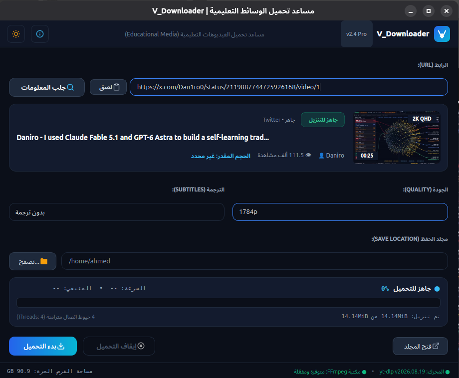
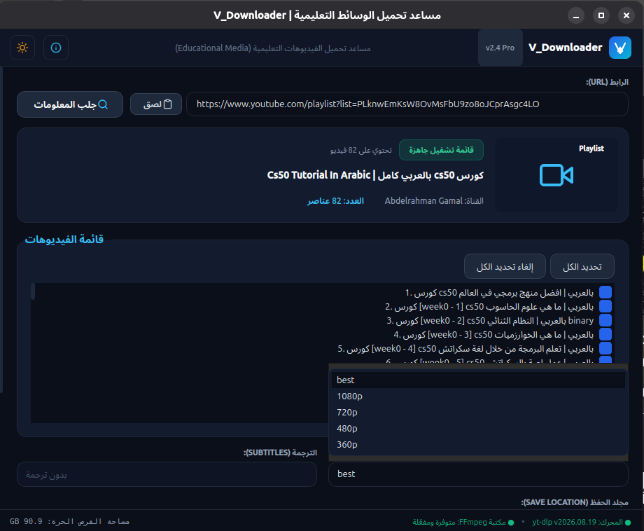

تطبيق مكتبي متكامل صُمم خصيصاً للطلبة والباحثين لحفظ الفيديوهات والمحاضرات وقوائم التشغيل التعليمية للوصول إليها بدون إنترنت، بجودة تصل إلى 4K وترميز متوافق مع كافة الشاشات القديمة والحديثة.
* تم توفير أحدث إصدار رسمي جاهز للتحميل المباشر.


أحدث التقنيات وأفضل تجربة استخدام لتيسير عمليتك التعليمية والبحثية
تحميل مقسم على 4 مسارات اتصال متزامنة لاستغلال أقصى سعة ممكنة لسرعة الإنترنت لديك وتوفير الوقت.
دمج وترميز الفيديوهات بتنسيق H.264 القياسي لضمان تشغيلها بدون تهنيج على شاشات TV Box والأجهزة المنزلية القديمة.
تنزيل كورسات وسلاسل كاملة بضغطة زر واحدة مع لوحة تحكم ذكية لاختيار فيديوهات معينة داخل القائمة.
كشف اللغات المتاحة تلقائياً وتنزيل ملفات الترجمة مدمجة أو مصاحبة للفيديو لمساعدة دارسي اللغات والعلوم.
واجهة تفاعلية حديثة مبنية بأحدث معايير التصميم، تدعم النمط الداكن المريح للعين والنمط الفاتح بنقرة زر.
برنامج نظيف 100% دون برمجيات إعلانية مزعجة أو تعقب، مبني بمحرك yt-dlp المتجدد دائماً.
تطبيق V_Downloader هو مشروع برمجي مفتوح المصدر تم تطويره للأغراض التعليمية، البحثية، والتعلم الذاتي خارج نطاق الاتصال المباشر بالإنترنت (Offline Learning).